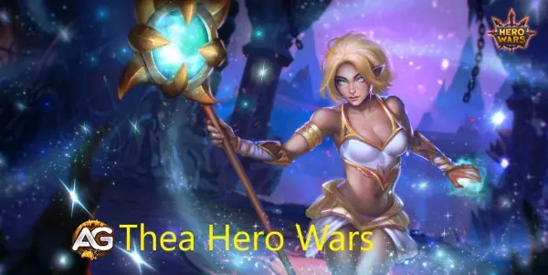
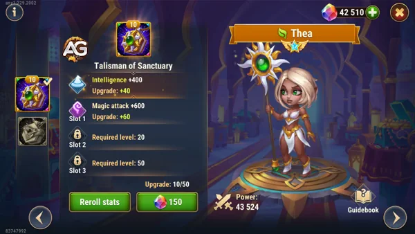

In the ever-evolving realm of Hero Wars Alliance, each hero introduces a distinct set of skills and abilities, adding depth and complexity to the battlefield. Among them, Thea emerges as a versatile healer, capable of turning the tide of battle with her powerful support abilities.
While she is often overshadowed by more popular choices in end-game lineups, her healing and utility potential make her an invaluable asset in various strategic scenarios. Understanding her skills and how to maximize their impact can make a significant difference, especially in the mid-game phase or specific compositions.
Thea’s unique abilities extend beyond her primary role as a healer. Her capacity to silence enemies, coupled with her targeted healing, allows her to contribute to both offensive and defensive strategies. Although she may not dominate in high-level meta formations, Thea shines in situations requiring consistent healing and tactical crowd control.
Properly positioning her within a team can amplify her strengths, making her a crucial ally against certain adversaries. Exploring her skillset and experimenting with different setups is key to unlocking her full potential.
Unveiling Thea: Hero Overview and Overall Tier List
Main Attributes
Position:
Back line
Function:
Healer
Main Stat:
Intelligence
Faction:
Nature
How to get Soul Stones:
Events, Heroic Chest, Chapter 2, 4, 7
Tier List 2025
Hero Overall Tier List:
B
Hydra Tier List:
A

Illustration of Thea a character from the game Hero Wars Alliance, developed by Nexters.
Understanding Thea's Role:
Before we dive into strategies, it's essential to recognize Thea's role within your team composition. While she may not be as prominent as Martha, another healer in the game, Thea still offers valuable utility and support.
Thea's Skill Set:
Solar Sanctuary:
Thea's first skill, Solar Sanctuary, is a boon to your team's survivability. It heals all members, providing a substantial amount of health regeneration based on Thea's Magic Attack and skill level.
Healing Beam:
With Healing Beam, Thea targets the ally with the lowest health, offering targeted healing to keep your team in the fight. The potency of this heal scales with Thea's Magic Attack and skill level.
Vow of Silence:
Vow of Silence is Thea's disruptive tool, silencing enemies for a significant duration. This skill not only neutralizes enemy spellcasting but also deals damage based on Thea's Magic Attack and skill level.
Second Wind:
Second Wind complements Thea's healing abilities by increasing the skill speed of healed allies. This buff allows your team to unleash their abilities more frequently, giving you a strategic advantage in prolonged battles.
Strategies for Thea:
Synergy with Jhu:
One of Thea's standout qualities is her ability to accelerate allied heroes' skill speed by 50% every time she heals them. This synergy pairs exceptionally well with heroes like Jhu, particularly in battles against Hydra bosses. Thea's ultimate rage not only heals the team but also accelerates their skill speed, allowing for relentless assaults on the enemy.
Disruption and Utility:
While Thea may not excel as the primary healer, her Vow of Silence provides valuable crowd control by silencing enemies. This can disrupt enemy strategies and create openings for your team to capitalize on. Additionally, her Healing Beam ensures that critical allies stay in the fight, mitigating potential threats.
Strategic Deployment:
When incorporating Thea into your team, consider the specific challenges you'll face in each battle. Her versatile skill set allows for adaptability in various scenarios, from prolonged engagements to burst-focused encounters. Understanding when to utilize each of her abilities can be the difference between victory and defeat.
Comparative Analysis of Thea's Talismans in Hero Wars Alliance
Thea, benefits greatly from her talismans, which enhance her healing capabilities and survivability. Below is a comparative analysis of two of her talismans: the Talisman of Sanctuary and the Talisman of Healer. Each talisman offers unique advantages that cater to different playstyles. A detailed comparison table is also provided to help you decide which talisman aligns best with your strategy.
Talisman of Sanctuary
The Talisman of Sanctuary provides Thea with 2000 intelligence points, which directly boosts her magical capabilities. Each intelligence point grants:
3 points to magical attack (totaling 6000 points).
1 point to magical defense (totaling 2000 points).
Additionally, this talisman offers 3 magical attack slots, each capable of reaching up to 6500 points with rerolls. Magical attack enhances all of Thea's healing abilities, making her an even more effective support hero in battles.

Thea with Talisman of Sanctuary, Hero Wars Alliance.
Talisman of Healer
The Talisman of Healer focuses on increasing Thea's survivability and healing potential. It provides:
Toughness: Reduces all incoming damage from enemies when Thea's health is low. This effect applies to all damage types (physical, magical, and pure) except health loss from allied abilities.
Health Slots: Includes 3 health slots, each capable of reaching up to 60,500 points with rerolls, significantly boosting her overall durability.
This talisman is ideal for players who want to ensure Thea's survival in critical moments, allowing her to continue healing her team even under heavy enemy fire.
Comparison Table
Feature
Talisman of Sanctuary
Talisman of Healer
Primary Stat Boost
2000 Intelligence
N/A
Intelligence Benefits
6000 Magical Attack, 2000 Magical Defense
N/A
Additional Slots
3 Magical Attack Slots (up to 6500 each)
3 Health Slots (up to 60,500 each)
Special Effect
N/A
Toughness (reduces incoming damage when health is low)
Best For
Enhancing healing abilities and magical attack
Increasing survivability and durability
Both talismans offer unique advantages depending on your preferred playstyle. If you aim to enhance Thea's healing abilities and magical attack, the Talisman of Sanctuary is the ideal choice. However, if you want to focus on increasing her survivability and ensuring she can continue healing in critical moments, the Talisman of Healer is the better option.
Thea Positive and Negative Points
Positive Points
Healing
Silence enemies for 4 seconds
Heals and increases ally's skill speed by 50% for 4 seconds
Negative Points
Healing is not enough
Needs to level a lot to heal enough
Strategic Evolution for Thea in Hero Wars Alliance
Thea, while not as prominent as other heroes, can play a crucial role in your team when evolved strategically. Here are some suggestions for prioritizing glyphs, artifacts, and skins to maximize Thea's potential:
Glyph Priority:
Magic Attack: Increasing Thea's magic power is crucial to enhancing the effectiveness of her healing and damage-dealing abilities.
Health: Boosting Thea's health helps ensure her survival on the battlefield, allowing her to continue healing her team.
Armor: Increasing Thea's armor can help her withstand physical attacks, making her more resilient against certain enemies.
Intelligence: Boosting Thea's intelligence can improve her healing ability and increase the damage of her skills.
Magical Defense: While less of a priority than other glyphs, increasing Thea's magical defense can be useful against teams focusing on magical abilities.
Artifact Priority:
Book: Prioritizing the book will further increase Thea's magic power, strengthening her healing and damage-dealing abilities.
Ring: The ring can offer additional magic attack and resistance benefits, increasing Thea's durability on the battlefield.
Weapon (Magical Defense): A weapon that increases Thea's magical defense can be useful in facing teams with high magical damage.
Skin Priority:
Health: Prioritizing skins that increase Thea's health can enhance her resistance and durability.
Magic Attack: Increasing Thea's magic power enhances both her healing ability and her damage.
Intelligence: Boosting Thea's intelligence can further improve her healing and damage abilities.
Armor: Increasing Thea's armor can make her more resistant to physical attacks, improving her survival.
By prioritizing these attributes in glyphs, artifacts, and skins, you can turn Thea into a valuable piece of your team in Hero Wars Alliance, maximizing her potential as a support and healer.
Thea with masquerade skin, Hero Wars Alliance.
Thea vs Hydra
Thea is a great hero against hydras, her fourth purple ability causes Thea to accelerate her allies every time she heals them, so it is a good combination with Jhu and Mojo to deal more damage to Hero Wars hydras; this combo is one of the best against fire hydras; every 11 seconds or every time she recharges energy Thea will heal Jhu and speed up by 50%.
Thea's team suggestion for Hydra: Thea, Mojo, Jhu, Tristan, Astaroth
While Thea may not be the most popular choice in end-game teams, her unique qualities make her a valuable asset in certain strategies. By understanding her strengths and synergies, you can maximize her potential and lead your team to victory in the ever-evolving battles of Hero Wars Alliance.
Did you like our Thea Guide Tips? Is there something you didn't understand or would like to suggest changes to? We invite you to join our comment section on the Alexandre Games Blog page. Feel free to express your opinion, clarify your doubts, and share your suggestions. Click the button below to get started:


 Martha
Martha